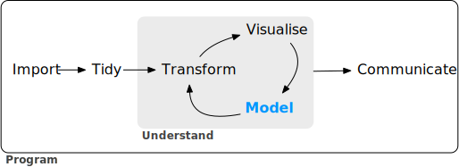

1 Software for modeling
模型是一种能描述系统及捕获系统内数据关系的数学工具。模型可用于各种目的，包括预测未来事件、确定几个群组之间是否存在差异、基于地图的辅助可视化、在数据中发现新的模式以供进一步研究等。模型的实用性取决于其还原能力，或者将复杂关系简化为简单项的能力。数据中的主要影响可以用数学方法有效地捕捉，例如可以用方程表示的关系。
自21世纪初以来，数学模型以明显和微妙的方式在我们的日常生活中变得无处不在。对许多人来说，典型的一天可能包括查看天气以确定什么时候是遛狗的好时机、从网站订购产品、给朋友发送短信并让其自动更正，以及查看电子邮件。在每种情况下，都很可能涉及某种类型的模型。在某些情况下，模型的贡献可能很容易被察觉 (“你可能也对购买产品 X 感兴趣”), 而在其他情况下，影响可能是某些东西的缺失 (例如，垃圾邮件)。模型被用来选择顾客可能喜欢的服装，识别一种应被评估为药物候选物的分子，甚至可能是一家邪恶公司用来避免发现过度污染汽车的机制。无论如何，模型都会存在。
有两个原因，使得模型在我们的当今生活中无处不在：
- 有大量可以用来创建模型的软件
- 数据的捕获、存储、访问变得更加容易。
本书主要聚焦于软件。显然，软件能否生成正确的关系来表示数据至关重要。在大多数情况下，判断数学上的正确性是有可能的，但要可靠地创建合适的模型，还需要更多条件。在本章中，我们将概述构建或选择建模软件时需考虑的因素、模型的用途，以及建模在更广泛的数据分析过程中所处的位置。
Fundamentals for Modeling Software
建模软件易于正确操作，这一点至关重要。用户界面的设计不应糟糕到让用户意识不到自己使用不当。例如，Baggerly和Coombes(2009)在一份备受关注的计算生物学出版物中，报告了数据分析方面存在的诸多问题。其中一个问题与要求用户添加模型输入名称的方式有关。该软件的用户界面很容易导致数据的列名与实际的数据列错位。这导致错误的基因被认定为对治疗癌症患者很重要，并最终致使多项临床试验终止(Carlson 2012)。
如果我们需要高质量的模型，软件必须便于正确使用。Abrams(2003)描述了一个有趣的原则来指导我们：与需要通过诸多考验和意外才能抵达的顶峰、巅峰或穿越沙漠的旅程形成鲜明对比的是，我们希望客户只需使用我们的平台和框架，就能自然而然地采用成功的实践方法——成功之坑。数据分析和建模软件应该拥护这一理念。其次，建模软件应当倡导良好的科学方法论。随着我们的模型变得更加强大和复杂，犯下潜在错误也变得更加容易。在处理复杂的预测模型时，人们很容易在不知不觉中犯下与逻辑谬误或不当假设相关的错误。许多机器学习模型在发现模式方面极为擅长，它们能毫不费力地在数据中找到经验模式，但这些模式在之后却无法复现。有些方法论错误具有隐蔽性，其问题可能直到后来获得包含真实结果的新数据时才会被发现。同样的原则也适用于编程。只要有可能，软件就应该能够保护用户避免犯错。软件应当让用户易于做出正确的操作。
模型开发的这两个方面——易于正确使用和良好的方法实践——至关重要。由于创建模型的工具易于获取，且模型能产生深远的影响，因此越来越多的人开始创建模型；但创建者的背景各不相同，他们使用的工具就需要能适应不同用户的经验水平——既要有足够的能力来创建高性能模型，又要易于正确使用。本书介绍了一套建模软件，其设计就考虑到了这些特点。
该软件基于R编程语言(R核心团队，2014)。R是专为数据分析和建模设计的。它是S语言的一种实现(其词法作用域规则借鉴了Scheme和Lisp)，S语言创建于20世纪70年代，旨在“快速且忠实地将想法转化为软件”(Chambers 1998)。R，开源且免费，是一种功能强大的编程语言，可用于多种不同用途，但专长于数据分析、建模、可视化和机器学习。R 具有良好的可扩展性，它拥有庞大的软件包生态系统，其中大部分是用户贡献的模块，专注于特定主题，如建模、可视化等。
有一组软件包集合被称为tidyverse(Wickham et al. 2019)。tidyverse是一组具有明确观点的R软件包集合，专为数据科学设计。所有软件包都共享相同的底层设计理念、语法和数据结构。其中一些设计理念直接源于本章所描述的建模软件的各个方面。如果你从未使用过tidyverse软件包，第2章包含了基本概念的回顾。在tidyverse中，专门专注于建模的那部分软件包被称为tidymodels软件包。本书是一本使用tidyverse和tidymodels软件包进行建模的实用指南。它展示了如何将一组各有特定用途的软件包结合起来，创建高质量的模型。
Types of Models
在继续之前，让我们描述一种按用途分组的模型类型分类法。这种分类法既说明了模型的使用方式，也说明了模型创建或评估的诸多方面。虽然这份列表并非详尽无遗，但大多数模型至少属于以下类别之一：
Descriptive models
描述性模型的目的是描述或阐明某些数据的特征。这种分析的唯一目的可能就是直观地强调数据中的某种趋势或特征。
例如，一段时间以来，利用微阵列对RNA进行大规模测量已成为可能。早期的实验室方法是将生物样本放置在小型微芯片上。芯片上非常小的位置能够根据特定RNA序列的丰度来测量信号。这种芯片会包含数千个(甚至更多)结果，每个结果都是与某一生物过程相关的RNA的量化数据。然而，芯片可能存在质量问题，进而导致结果不佳。例如，不小心在芯片的某一部分留下指纹，可能会在扫描时造成测量不准确。
一种用于评估此类问题的早期方法是探针水平模型(probe-level models，简称PLMs)(Bolstad 2004)。该模型会考虑数据中已知的差异，比如芯片、RNA序列、RNA类型等。如果数据中存在其他未知因素，这些影响会体现在模型残差中。当按照残差在芯片上的位置绘图时，质量良好的芯片不会呈现出任何规律。而当出现问题时，某种空间模式就会变得可识别。通常，模式的类型会暗示潜在的问题(例如，指纹)以及可能的解决方案(擦拭芯片后重新扫描、重新制备样本等)。图1.1(a)展示了这种方法在两个微阵列上的应用，这些微阵列来自Gentleman等人(2005)的研究。图像呈现出两种不同的颜色值：颜色较深的区域表示信号强度大于模型预期值，而颜色较浅的区域则表示信号强度低于预期值。左侧面板显示出相当随机的模式，而右侧面板则在芯片中间出现了不理想的伪影。
描述性模型的另一个例子是局部估计散点图平滑模型(locally estimated scatterplot smoothing model)，更常见的名称是LOESS(Cleveland 1979 年)。在这里，会为数据集拟合一个平滑且灵活的回归模型，该数据集通常只有一个自变量，而拟合出的回归线被用于阐明数据中的某种趋势。这类平滑器用于发现模型中变量的潜在表示方法。图1.1(b)就展示了这一点，其中灵活的平滑器揭示了一种非线性趋势。从该图中可以清楚地看出，房屋售价与其纬度之间存在高度的非线性关系。
Inferential models
推断模型的目标是为研究问题做出决策或探索特定假设，这与统计检验的使用方式类似。推断模型始于对总体预先设定的推测或想法，并得出统计结论，如区间估计或对某一假设的拒绝。
例如，临床试验的目标可能是证实一种新疗法在延长生命方面比其他疗法(如现有疗法或完全不治疗)更有效。如果临床试验的终点与患者的生存相关，那么零假设可能是新疗法的中位生存时间相等或更短，而备择假设则是新疗法的中位生存时间更长。如果通过建模采用传统的零假设显著性检验来评估该试验，显著性检验会基于对数据的一系列假设，使用某种预先定义的方法计算出P值。模型结果中较小的P值表明有证据显示新疗法有助于患者延长寿命。模型结果中较大的P值则表明未能证明存在这种差异；这种证据的缺乏可能由多种原因导致，包括疗法无效。
这类分析的重要方面是什么？推断建模技术通常会产生某种类型的概率输出，例如p值、置信区间或后验概率。一般来说，要计算这样的量，必须对数据以及生成数据的潜在过程做出正式的概率假设。统计建模结果的质量在很大程度上取决于这些预先定义的假设，以及观察到的数据与这些假设的吻合程度。这里最关键的因素是理论层面的：“如果我的数据是独立的，且残差服从分布X，那么检验统计量Y可用于生成p值。否则，所得p值可能不准确。”
推断性分析的一个方面是，在理解数据与模型假设的匹配程度时，往往存在一个延迟的反馈循环。在我们的临床试验示例中，如果统计学(和临床)显著性表明新疗法应该可供患者使用，但可能还需要数年时间，该疗法才能在实际中应用，并且才能生成足够的数据，以便独立评估最初的统计分析是否得出了恰当的决策。
Predictive models
有时，数据会被建模，以尽可能对新数据做出最准确的预测。在这里，主要目标是让预测值与新数据的真实值尽可能地吻合。
一个简单的例子是，图书采购商要预测下个月应该向自己的门店运送多少本某一特定书籍。预测过高会因为书籍过剩而浪费空间和资金。如果预测低于实际所需，就会造成机会损失和利润减少。
对于这类模型，问题类型属于估计而非推断。例如，买家通常不会关心诸如“下个月我能卖出超过100本X书吗？”这样的问题，而是更关注“下个月顾客会购买多少本X书？”此外，根据具体情境，人们可能并不在意预测值为何是X。换句话说，相比评估与数据相关的正式假设，人们更关注预测值本身。预测还可以包含不确定性度量。就图书买家而言，提供预测误差可能有助于决定购买多少本书，它也可以作为衡量预测方法效果的一个指标。
影响预测模型的最重要因素是什么？创建预测模型的方法有很多种，因此重要因素取决于模型的开发方式。
可以利用基本原理推导出一个机械模型(mechanistic model)，从而得到一个依赖于假设的模型方程。例如，在预测某一时刻人体内的药物量时，需要对药物的给药、吸收、代谢和消除方式做出一些正式假设。基于此，可以使用一组微分方程推导出特定的模型方程。数据被用于估计该方程的未知参数，以便生成预测结果。与推理模型一样，机械预测模型在很大程度上依赖于定义其模型方程的假设。然而，与推理模型不同的是，根据模型对现有数据的预测效果，很容易做出基于数据的关于模型性能的表述。在这里，建模从业者的反馈循环比假设检验的反馈循环快得多。
经验驱动模型(empirically driven models)的创建基于更模糊的假设。这类模型往往属于机器学习范畴。一个很好的例子是K近邻(KNN)模型。给定一组参考数据，通过使用参考集中K个最相似数据的值来预测新样本。例如，如果一个图书采购员需要对一本新书进行预测，可能会有现有图书的历史数据可用。5近邻模型会根据与这本新书最相似的五本书的销量(基于某种“相似性”定义)来估计这本新书的采购数量。该模型仅由预测结构(五本相似图书的平均值)来定义。对于销量数据或用于定义相似性的变量，没有做出任何理论上或概率上的假设。事实上，评估该模型适用性的主要方法是利用现有数据来评估其准确性。如果这类模型的结构选择得当，其预测结果将接近实际值。
Connections Between Types of Models
请注意，我们是根据模型的使用方式而非其数学特性来定义模型类型的。普通线性回归模型可能会属于这三类模型中的任何一类，这取决于它的使用方式：
一种类似于LOESS的描述性平滑器，称为限制性平滑样条(Durrleman和Simon 1989年)，可以通过带有专门项的普通线性回归来描述数据中的趋势。
方差分析(ANOVA)模型是生成用于推断的p值的常用方法。方差分析模型是线性回归的一种特例。
如果简单线性回归模型能产生准确的预测，那么它就可以用作预测模型。
有许多预测模型无法(或者至少不应该)用于推断的例子。即使对数据做出了概率假设，例如，K近邻模型的特性也使得推断所需的数学计算难以处理。
模型类型之间还有另一种联系。虽然描述性模型和推断性模型的主要目的可能与预测无关，但不应忽视模型的预测能力。例如，逻辑回归是一种常用于结果为具有两个可能值的定性数据的模型。它可以模拟变量与结果概率之间的关系。当用于推断时，人们会高度关注模型的统计性质。例如，分析师往往会着重关注模型中包含的自变量的选择。可能会通过多次模型构建迭代来确定与结果变量具有“统计显著性”关系的最小自变量子集。通常，当所有自变量的p值都低于某个特定值(例如0.05)时，就达到了这一目标。在此基础上，分析师可能会着重对变量对结果的相对影响做出定性陈述(例如，“年龄与患心脏病的几率之间存在统计上的显著关系”)。
然而，当将统计显著性作为衡量模型质量的唯一标准时，这种方法可能具有危险性。有可能这个经过统计优化的模型具有较差的模型准确性，或者在其他一些预测能力指标上表现不佳。尽管该模型可能不会用于预测，但对于一个p值显著却准确性极差的模型，其得出的推论又能有多少可信度呢？预测性能往往与模型的拟合值和观测数据的接近程度有关。如果一个模型与数据的保真度有限，那么该模型生成的推论就非常值得怀疑。换句话说，统计显著性可能不足以证明一个模型是合适的。这在直觉上可能显而易见，但在现实世界的数据分析中却常常被忽视。
Some Terminology
在继续之前，我们将概述与建模和数据相关的其他术语。这些描述旨在帮助你阅读本书，但并非详尽无遗。
首先，许多模型可以分为有监督或无监督两类。无监督模型是指那些学习数据的模式、聚类或其他特征但缺乏结果(即因变量)的模型。主成分分析(PCA)、聚类和自编码器都是无监督模型的例子；它们用于理解变量之间或变量集之间的关系，而无需预测变量与结果之间存在明确的关系。有监督模型是那些具有结果变量的模型。线性回归、神经网络以及许多其他方法都属于这一类。
在有监督模型中，有两个主要的子类别：
回归用于预测数值型结果。
分类用于预测属于有序或无序定性值集合的结果。
这些定义并不完善，也没有涵盖所有可能的模型类型。在第6章中，我们将监督技术的这一特征称为模型模式。
不同的变量可以有不同的作用，尤其是在监督建模分析中。结果,也称为标签(labels)、端点(endpoints)或因变量(dependent variables)是监督模型中预测的值。自变量(independent variables)是预测结果的基础，也被称为预测因子(predictors)、特征(features)或协变量(covariates)(取决于上下文)。本书中最常用的术语是结果和预测因子。
就数据或变量本身而言，无论是用于有监督模型还是无监督模型，作为预测变量还是结果变量，主要分为两类：定量的和定性的。前者的例子包括像3.14159这样的实数以及像42这样的整数。定性值，也称为名义数据，指的是代表某种离散状态、无法自然地置于数值尺度上的值，例如“红色”“绿色”和“蓝色”。
How Does Modeling Fit into the Data Analysis Process?
在哪些情况下会创建模型？在进行这样的工作之前有哪些步骤吗？模型创建是数据分析的第一步吗？在建模之前，总有几个关键的数据分析阶段。
首先，存在一个长期被低估的过程，即数据清洗。无论在何种情况下，你都应该对数据进行调查，以确保它们适用于你的项目目标、准确且恰当。这些步骤通常比数据分析过程的其他部分花费更多时间(具体取决于实际情况)。
数据清洗也可能与第二阶段——理解数据(通常称为探索性数据分析，即EDA)重叠。探索性数据分析会揭示不同变量之间的关系、它们的分布情况、典型范围以及其他属性。在这个阶段，一个值得问的问题是：“我是如何获得这些数据的？”这个问题能帮助你了解手头的数据是如何被抽样或筛选的，以及这些操作是否恰当。例如，在合并数据库表时，连接操作可能会出错，从而意外地排除一个或多个子群体。另一个好主意是询问这些数据是否相关。例如，要预测患者是否患有阿尔茨海默病，使用包含该病患者和从普通人群中随机抽取的健康成年人的数据集是不明智的。鉴于这种疾病的进行性，模型可能只会预测出哪些患者年龄最大。
最后，在开始数据分析过程之前，应该对模型的目标以及如何评判其性能(和成功与否)有明确的预期。至少要确定一个具有可实现的现实目标的性能指标。第9章将更详细地讨论一些常见的统计指标，例如分类准确率、真阳性率和假阳性率、均方根误差等。应该权衡这些指标的相对优缺点。同样重要的是，所选指标要贴切；它与更广泛的数据分析目标保持一致至关重要。
对数据进行调查的过程可能并不简单。Wickham和Grolemund(2016)对一般数据分析过程进行了精彩的阐述，其内容转载于图1.2中。数据获取以及数据清理/整理被列为初始步骤。当用于理解数据的分析步骤开始时，它们是一个启发式过程；我们无法预先确定这些步骤可能需要多长时间。转换、建模和可视化这一循环往往需要多次迭代。

这种迭代过程在建模方面尤为如此。图1.3模拟了确定合适模型的典型路径。大致阶段如下：
探索性数据分析(EDA)：起初，数值分析和数据可视化之间会有反复的互动(如图1.2所示)，在这个过程中，不同的发现会引发更多问题，进而促使人们开展数据分析的支线任务，以获得更深入的理解。
特征工程：从探索性数据分析(EDA)中获得的理解会促使人们创建特定的模型项，这些模型项能让对观测数据进行准确建模变得更加容易。这可能包括复杂的方法(例如主成分分析(PCA))或更简单的特征(使用两个预测变量的比率)。第8章专门探讨这一重要步骤。
模型调优与选择(带有交替片段的大圆圈)：会生成多种模型并对它们的性能进行比较。有些模型需要参数调优，其中一些结构参数必须被指定或优化。圆圈内的交替片段表示重采样过程中使用的重复数据拆分(参见第10章)。
模型评估：在模型开发的这一阶段，我们会评估模型的性能指标，检查残差图，并进行其他类似探索性数据分析(EDA)的分析，以了解模型的运行效果。在某些情况下，正式的模型间比较(第11章)能帮助你了解模型之间的差异是否在实验误差范围内。

在完成这些任务的初始序列后，人们会对哪些模型更优以及哪些数据子群体没有得到有效估计有更深入的理解。这会引发额外的探索性数据分析(EDA)和特征工程、另一轮建模，依此类推。一旦达成数据分析目标，通常最后的步骤就是对模型进行定稿、文档记录和交流。对于预测模型，最后通常会使用一组专门为此目的预留的额外数据来验证模型。
例如，M.Kuhn和Johnson(2020)利用数据对芝加哥公共铁路系统的每日客流量进行建模，所使用的预测变量包括日期、以往的客流量结果、天气以及其他因素。表1.1大致呈现了这些作者在分析这些数据并最终选择一个性能足够的模型时，其假设的内心想法。
| Thoughts | Activity |
|---|---|
| 车站之间的每日客流量数值具有极强的相关性。 | EDA |
| 工作日和周末的客流量看起来大不相同。 | EDA |
| 2010年夏天的某一天，乘客数量异常庞大。 | EDA |
| 哪些车站的每日客流量最低？ | EDA |
| 日期至少应编码为星期几和年份。 | Feature Engineering |
| 或许可以对这些相关的预测变量使用主成分分析(PCA)，以便模型能更轻松地运用它们。 | Feature Engineering |
| 每小时的天气记录或许应该汇总为每日的测量数据。 | Feature Engineering |
| 让我们从简单线性回归、K近邻和梯度提升决策树开始。 | Model Fitting |
| 应该使用多少个邻居？ | Model Tuning |
| 我们应该进行大量的 boosting 迭代，还是只进行少量迭代呢？ | Model Tuning |
| 对于这些数据，多少个邻居似乎是最优的？ | Model Tuning |
| 哪些模型的均方根误差最低？ | Model Evaluation |
| 哪些日子的预测效果很差？ | EDA |
| 变量重要性得分表明天气信息不具有预测性。我们将在接下来的模型集中剔除它们。 | Model Evaluation |
| 看来我们应该专注于为该模型进行大量的提升迭代。 | Model Evaluation |
| 我们需要对节假日特征进行编码，以改进在这些日期(及前后)的预测。 | Feature Engineering |
| 让我们把KNN从模型列表中剔除。 | Model Evaluation |
Chapter Summary
本章重点介绍了模型如何描述数据中的关系，以及不同类型的模型，如描述性模型、推断性模型和预测性模型。即使模型的主要目标不是预测，其预测能力也可用于对其进行评估。建模本身处于更广泛的数据分析过程中，而探索性数据分析是构建高质量模型的关键部分。